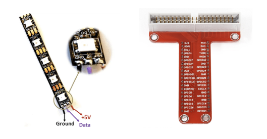

RGB LED Strip Controlled via Webpage
Project Overview
TThis project will demonstrate the basics of IoT, cloud services, and coding by creating a web-controlled RGB LED strip using a Raspberry Pi 4 and WS2812 RGB LED strips.
The project will involve setting up the Raspberry Pi and connecting to a cloud service for remote control.
Materials Needed
Hardware
- Raspberry Pi
- WS2812 RGB 8 LED Strip
- MicroSD card (16GB or larger, recommended 64GB)
- Power supply for Raspberry Pi
- Breadboard
- Jumper wires
- Computer with network access
Software
- 64-bit Raspberry Pi OS
- Python 3
- Adafruit CircuitPython NeoPixel library
Steps
Step 1: Connect the LED to the Raspberry Pi
- Connect data pin to GPIO 18.
- Connect 5V power.
- Connect ground (GND).

Step 2: Setting up the Raspberry Pi
- Download and flash Raspbian OS using Balena Etcher or Pi Imager.
- Boot Raspberry Pi and complete initial setup.
- Locate device IP and SSH into Raspberry Pi:
ssh username@hostname
SSH Overview
- Secure remote login
- Encrypted data transfer
- Secure file transfer (SCP/SFTP)
- Port forwarding
- Remote command execution
- Strong authentication
Step 3: Installing Required Libraries and Packages
sudo apt-get update
sudo apt-get upgrade
sudo apt-get install python3
sudo apt-get install python3-pip
sudo pip3 install adafruit-circuitpython-neopixel
sudo pip3 install rpi_ws281x
Step 4: Test LED Strip
nano test_led.py
sudo python3 test_led.py
Step 5: Install Flask
pip install Flask
Step 6: Create Web Interface Using Flask
nano app.py
mkdir templates
nano templates/index.html
sudo python3 app.py
Step 7: Integrating with Cloud Services
sudo pip3 install yagmail
nano app_cloud.py
Step 8: Testing and Deployment
- Test locally.
- Deploy when confirmed operational.
Python: A beginner-friendly programming language that’s easy to read and write.
pip: A package manager for Python to install extra libraries and tools.
Flask: A lightweight framework to quickly build web apps in Python.
SSH: A secure way to remotely connect and manage computers over the network.